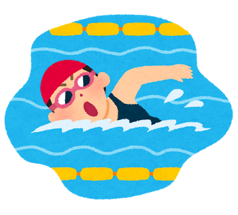
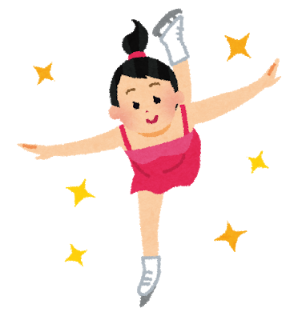

スポーツの紹介
- バスケットボール
- 水泳
- フィギュアスケート
バスケットボール

バスケットボールは、5人ずつの選手が2つのチームで争う球技です。
バスケットボールをゴールとなるリングに入れることで得点がはいります。
体育館で行われることが多いですが、ストリートで遊び感覚で行われることもあります。
ドリブル、パス、シュートなどをしながら、5人で協力して、
リングにボールを入れることを目指します。
シュートのテクニック、長距離からの3点シュート、ダンクシュートなどの華麗な
テクニックがかっこいいスポーツです
水泳

プールで泳ぐスポーツです。主に、4種類の泳法があります。
クロール、平泳ぎ、背泳ぎ、バタフライです。
水泳の競技では、それぞれの泳法で泳ぎ、速くゴールに到達した選手が勝ちます。
水泳は、競技だけでなく、レクリエーションとしても楽しまれています。
子どもから、お年寄りまで、健康のために泳ぐ人がいます。
屋外のプールだけでなく、屋内での温水プールを利用すると、一年中、
水泳を楽しむことができます
フィギュアスケート

フィギュアスケートは、氷の上で、技を競い合うウィンタースポーツです。
氷を張り詰めたスケートリンクの上でスケート用の靴を履いて、滑ります。
スケートリンクで、ステップ、ジャンプ、スピンなどの多様なテクニックを組み合わせて、滑ります。
冬のオリンピックでの人気競技の一つです